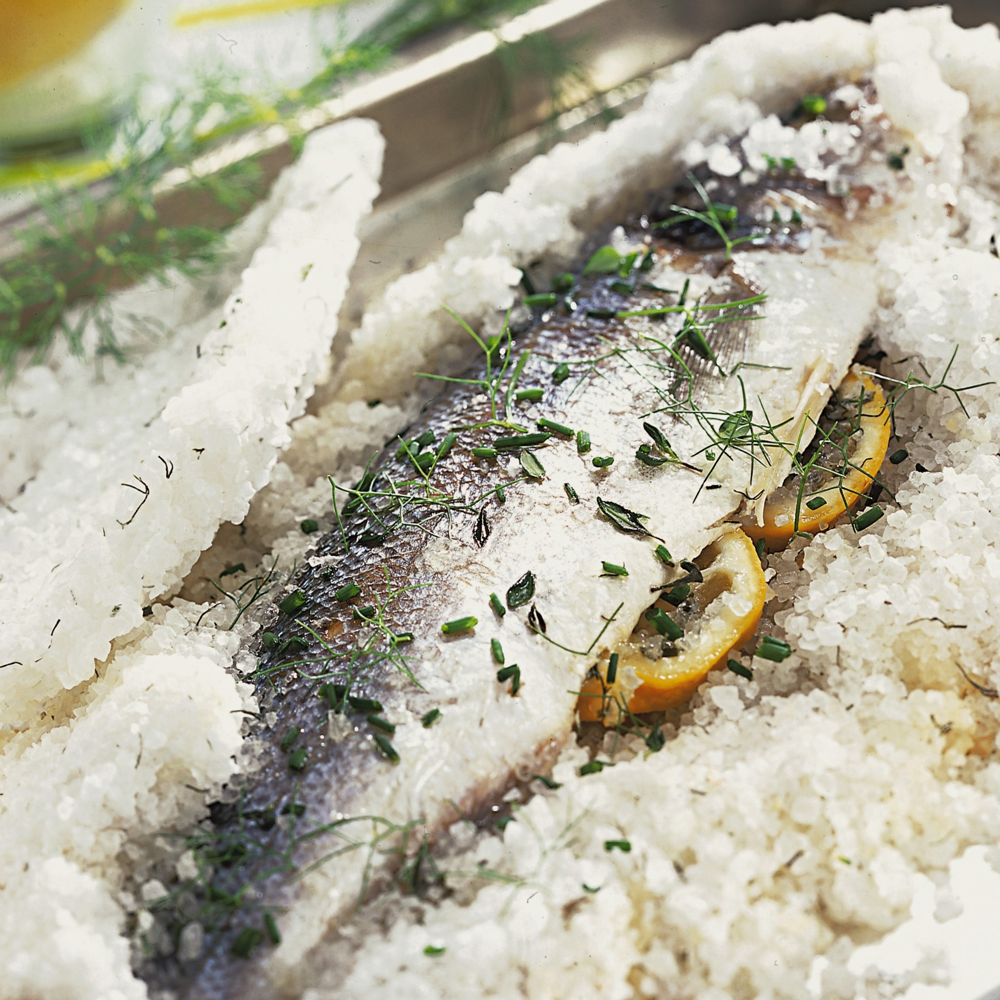

Home
Branzino al Sale

Description
Branzino al Sale is a classic Italian preparation method that yields incredibly moist, tender, and perfectly
seasoned fish. The entire fish is encased in a thick crust of salt (often mixed with egg whites to form a
paste), which then hardens in the oven. This crust seals in all the moisture and steam, gently cooking the fish
in its own juices. The hardened salt crust is cracked open at the table for a dramatic presentation, revealing
the succulent, flaky meat within. The salt itself does not make the fish overly salty; rather, it forms a
perfect barrier that seasons the fish delicately.
Ingredients
- 1 whole branzino (European sea bass), about 1.5 to 2 pounds, scaled and gutted
- 3 pounds coarse sea salt or kosher salt (do not use iodized table salt)
- 3 large egg whites, lightly beaten
- A few sprigs of fresh rosemary
- A few sprigs of fresh thyme (optional)
- 2-3 thick slices of lemon
- High-quality extra virgin olive oil, for serving
- Fresh lemon wedges, for serving
- Freshly ground black pepper, for serving
Steps
Prepare the Fish
- Preheat your oven to 400°F (200°C).
- Rinse the fish (inside and out) under cold water and pat it completely dry with paper towels. A very
dry fish is crucial for a good crust.
- Stuff the cavity of the branzino with the rosemary sprigs, thyme sprigs (if using), and lemon slices.
This will infuse the fish with aroma from the inside out as it steams.
Prepare the Salt Crust
- In a large bowl, combine the coarse salt with the lightly beaten egg whites.
- Mix thoroughly with your hands or a large spoon. The texture should be similar to damp sand, able to be
packed together. If it seems too dry, you can add another egg white or a tiny splash of water, but be
cautious not to make it wet.
Encase the Fish in Salt
- Line a baking sheet with parchment paper.
- Spread about a 1/2-inch thick layer of the salt mixture on the parchment paper, creating a bed for the
fish that is slightly larger than the fish itself.
- Place the prepared fish on top of the salt bed.
- Use the remaining salt mixture to completely cover the fish. Pack it firmly around the sides and over
the top, ensuring there are no gaps or holes. The crust should be at least 1/2-inch thick all over. Do
not cover the very tip of the tail, as this can serve as a visual indicator of doneness.
Bake the Branzino
- Place the baking sheet in the preheated oven.
- Bake for 20-25 minutes. A general rule is about 15 minutes per pound of fish. The salt crust should be
hard, firm, and lightly golden when done.
Rest and Serve
- Carefully remove the baking sheet from the oven and let the fish rest in its crust for 5-10 minutes.
This allows the juices to redistribute, resulting in a more tender fish.
- To serve, bring the entire fish in its crust to the table. Use the back of a heavy spoon or a small
mallet to firmly tap along the crust until it cracks.
- Carefully lift away the large pieces of the salt crust. Use a pastry brush to sweep away any excess
salt from the top of the fish's skin.
- Using a knife and fork, make an incision along the fish's back. You can then peel back the skin, which
should come away easily, to reveal the large, flaky fillets.
- Serve the fillets immediately. Drizzle with high-quality olive oil and a squeeze of fresh lemon juice,
and add a crack of black pepper.